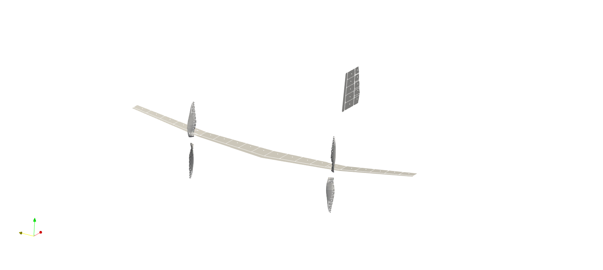

Advanced System Definition
In this guide, we will cover how to define complex systems. Basic system definitions were presented in the First Steps tutorial, but applications quickly become more complex than a simple, control-free wing.
Wing Subsystems
We will first cover creating wing subsystems. The key here is that any system can be a sub-system. Take, for example, the vertical stabilizer and rudder from Advanced Wing Definition which we can define a add to a wing system.
#Vertical Stabilizer
span = 0.25 #length of full span
numlattice = 5 #number of lattice elements on half-span
poschord = [0.0; 1.0] #postion of chord stations
lengthtipchordvstab = 0.05 #length of tip chord
lengthchordvstab = [1.25; 1.0] #length of chords
twistchord = [0.0; 0.0] #twist of chords, in degrees
sweepsection = [0.0] #sweep of sections between chords, in degrees
dihedralsection = [0.0] #dihedral of sections between chords, in degrees
aspectratio = span/lengthtipchordvstab
verticalstabilizer = vlm.complexWing(span, aspectratio, numlattice, poschord, lengthchordvstab, twistchord, sweepsection, dihedralsection; symmetric=false, chordalign=1.0)
originvstab = [0.5; 0.0; 0.0] #origin moved 0.5 in positive x-direction
csysvstab = [1.0 0.0 0.0; 0.0 0.0 1.0; 0.0 1.0 0.0] #csys rotated 90 degrees from default
vlm.setcoordsystem(verticalstabilizer,originvstab,csysvstab)
#Rudder
span = 0.25 #length of full span
numlattice = 5 #number of lattice elements on half-span
poschord = [0.0; 0.25; 1.0] #postion of chord stations
lengthtipchord = 0.03 #length of tip chord
lengthchord = [1.25; 1.5; 1.0] #length of chords
twistchord = [0.0; 0.0; 0.0] #twist of chords, in degrees
sweepsection = [0.0; 0.0] #sweep of sections between chords, in degrees
dihedralsection = [0.0; 0.0] #dihedral of sections between chords, in degrees
aspectratio = span/lengthtipchord
rudder = vlm.complexWing(span, aspectratio, numlattice, poschord, lengthchord, twistchord, sweepsection, dihedralsection; symmetric=false, chordalign=0.0)
lengthrootchordvstab = lengthchordvstab[1]*lengthtipchordvstab
originrudder = [0.5+lengthrootchordvstab; 0.0; 0.0] #account for vstab position and chord
csysrudder = [1.0 0.0 0.0; 0.0 0.0 1.0; 0.0 1.0 0.0] #csys rotated 90 degrees from default
vlm.setcoordsystem(rudder,originrudder,csysrudder)
#System Definition
tail = vlm.WingSystem()
vlm.addwing(tail,"vstab",verticalstabilizer)
vlm.addwing(tail,"rudder",rudder)Now we might want that tail system to be part of a full system, so let's define the main wing and add both it and the tail system to the full system.
#Main Wing
span = 1.0 #length of full span
numlattice = 10 #number of lattice elements on half-span
poschord = [0.0; 0.5; 1.0]./span #postion of chord stations
lengthtipchord = 0.03 #length of tip chord
lengthchord = [0.075; 0.05; 0.03]./lengthtipchord #length of chords
twistchord = [0.0; 0.0; -3.0] #twist of chords, in degrees
sweepsection = [10.0; 5.0] #sweep of sections between chords, in degrees
dihedralsection = [0.0; 7.0] #dihedral of sections between chords, in degrees
aspectratio = span/lengthtipchord
mainwing = vlm.complexWing(span, aspectratio, numlattice, poschord, lengthchord, twistchord, sweepsection, dihedralsection; symmetric=true)
#System Definition
system = vlm.WingSystem()
vlm.addwing(system,"mainwing",mainwing)
vlm.addwing(system,"tail",tail)And that's all there is to it. The main wing and tail system are now both components of the overall system. Any combination of wing objects and wing systems can be added to any system.
VLM Systems
Anything that will be solved using the VLM (see Reference) needs to be identified as such. In our case, all the wings fall under this category.
vlm_system = vlm.WingSystem()
vlm.addwing(vlm_system,"mainwing",mainwing)
vlm.addwing(vlm_system,"tail",tail)Wake Systems
You need to tell the solver which of the systems you've created need to be included in the wake simulation. In this case, we want everything to be in our wake system, which is defined just like before.
wake_system = vlm.WingSystem()
vlm.addwing(wake_system,"mainwing",mainwing)
vlm.addwing(wake_system,"tail",tail)Rotor Systems
Rotor systems begin with rotors, the definition of which is covered in Advanced Rotor Definition. Once you have rotors defined with their respetive databases, you can create rotor systems. Let's add two rotors to our airplane in this guide to see how it is done.
First let's decide where we want to place the rotors.
posrotorplus = [0.0; 0.25; 0.0] #xyz position of rotor in positive y-direction
posrotorminus = -posrotorplus #xyz position of rotor in negative y-direction
vehicleaxis = [1.0 0.0 0.0; 0.0 1.0 0.0; 0.0 0.0 1.0] #default coordinate systemWe need a few more parameters for defining rotors as well.
rotor_file = "apc10x7.csv" # data file for rotor
data_path = uns.def_data_path # data path to find file
R, B = uns.read_rotor(rotor_file; data_path=data_path)[[1,3]] #grab rotor radius
n = 100.0 #target RPS
Vref = 20.0 #freestream velocity
vind = sqrt( Vref^2 + (n*R)^2 ) #velocity at blade tip
rho = 1.225 #(kg/m^3) air density
mu = 1.81e-5 #(kg/ms) air dynamic viscosity
ReD = rho*2.0*R*vind/mu #Diameter-based Reynolds
numbladeelements = 10 #number of blade elements
rotorpitch = 0.0 #rotor pitchNow we are ready to define some propellers.
rotors = vlm.Rotor[]
push!(rotors,
uns.generate_rotor(rotor_file;
pitch=rotorpitch,
n=numbladeelements,
CW=true,
ReD=ReD,
verbose=true,
xfoil=false,
data_path=data_path)
)
push!(rotors,
vlm.Rotor(!rotors[1].CW,
rotors[1].r,
rotors[1].chord,
rotors[1].theta,
rotors[1].LE_x,
rotors[1].LE_z,
rotors[1].B,
rotors[1].airfoils))
vlm.initialize(rotors[2], rotors[1].m)
vlm.setcoordsystem(rotors[1], posrotorminus, vehicleaxis; user=true)
vlm.setcoordsystem(rotors[2], posrotorplus, vehicleaxis; user=true)Now that we have defined our rotors, we can add them to the other systems
for (i, rotor) in enumerate(rotors)
vlm.addwing(system, "rotor$i", rotor)
vlm.addwing(wake_system, "Rotor$i", rotor)
endYou can only use a specific name in one system. Note how in the example above, rotor$i is used for the main system, and captial Rotor$i is used for the wake system
Finally, we need to create our rotor system, which is actually just a tuple of the rotor object we've already created.
rotor_systems = (rotors, )
Tilting Systems
A tilting system is simply a tuple of all the wing systems that will be rotating according to specific definitions beyond the overall aircraft orientations. In our case, that would just be the rudder.
tilting_systems = (rudder, )